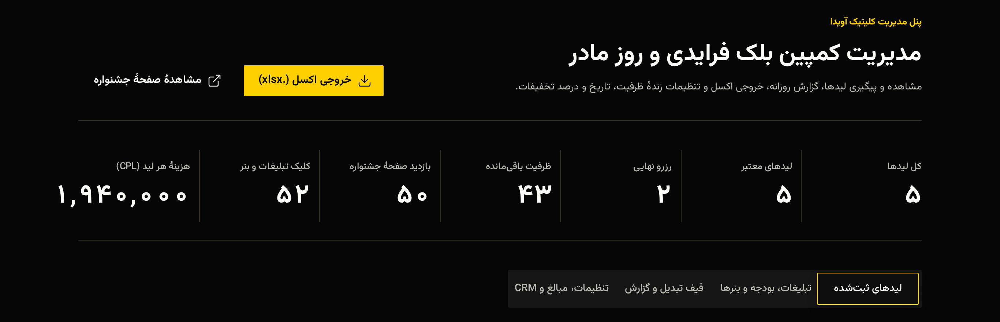
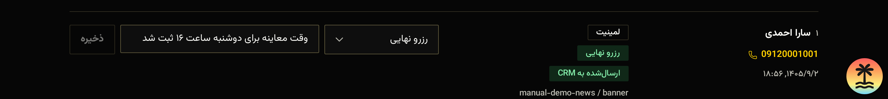

فصل۳
مدیریت، پیگیری و خروجی اکسل لیدها
آشنایی با نوار شاخصها و سربرگ پنل
پس از ورود به /admin/campaign، بالای صفحه خلاصهٔ زندهٔ عملکرد جشنواره و دکمههای اصلی قرار دارد.

- دکمهٔ خروجی اکسل (.xlsx) ۱ فهرست لیدها (مطابق فیلتر فعال) را بهصورت فایل اکسل راستبهچپ دانلود میکند.
- دکمهٔ مشاهدهٔ صفحهٔ جشنواره ۲ صفحهٔ عمومی
/black-fridayرا باز میکند. - نوار شاخصهای کلیدی ۳ بهترتیب کل لیدها، لیدهای معتبر، رزرو نهایی، ظرفیت باقیمانده، بازدید صفحهٔ جشنواره، کلیک تبلیغات و بنر و هزینهٔ هر لید (CPL) را نشان میدهد.
- چهار زبانهٔ اصلی ۴ شما را میان لیدهای ثبتشده، تبلیغات، بودجه و بنرها (فصل ۴)، قیف تبدیل و گزارش (فصل ۵) و تنظیمات، مبالغ و CRM (فصل ۶) جابهجا میکنند.
جستوجو و فیلتر لیدها
- برای یافتن سریع یک متقاضی، بخشی از نام، شماره تماس، منبع ورود یا یادداشت او را در کادر جستوجو با نام، شماره تماس یا منبع... ۱ بنویسید؛ جستوجو به تفاوت حروف عربی و فارسی (مانند «ی/ي» و «ک/ك») حساس نیست.
- با فهرست همهٔ وضعیتها ۲ میتوانید فقط لیدهای یک مرحله (مثلاً جدید یا ارجاع به پذیرش) را ببینید.
- با فهرست همهٔ درمانها ۳ لیدها را بر اساس درمان انتخابشده (پایه ایمپلنت، پایه ایمپلنت همراه با روکش، لمینیت یا مشاورهٔ هر دو) جدا کنید.
پیگیری لید، تغییر وضعیت و ثبت یادداشت
هر ردیف در فهرست، اطلاعات کامل یک متقاضی و ابزار پیگیری مشاور را در یک نگاه در اختیار شما میگذارد.

- روی شماره تماس ۱ بزنید تا در صورت پشتیبانی دستگاه، تماس تلفنی مستقیم برقرار شود.
- برچسب درمان، وضعیت فعلی و منبع ورود متقاضی (مانند نام سایت تبلیغاتی یا ورود مستقیم) در ستون میانی ۲ دیده میشود.
- پس از تماس، وضعیت را از فهرست کشویی ۳ تغییر دهید؛ تغییر وضعیت بلافاصله و بدون نیاز به زدن دکمهٔ دیگری ذخیره میشود.
- خلاصهٔ مکالمه یا زمان تماس بعدی را در کادر یادداشت پیگیری... ۴ بنویسید و روی ذخیره ۵ بزنید.
نکتهٔ کلیدی
| وضعیت | کاربرد و اثر در سامانه |
|---|---|
| جدید | درخواست تازه ثبت شده و منتظر نخستین تماس تیم مشاوره است. جزو لیدهای معتبر شمرده میشود. |
| تماس و پیگیری | مشاور با متقاضی تماس گرفته و پیگیری یا بررسی شرایط در جریان است. |
| ارجاع به پذیرش | متقاضی برای تعیین وقت و تشکیل پرونده به پذیرش کلینیک ارجاع شده است. |
| رزرو نهایی | نوبت قطعی ثبت شده است. در حالتهای محاسبهٔ ظرفیت بر اساس لیدهای تأییدشده یا ترکیبی، هر رزرو نهایی یک نفر از ظرفیت باقیمانده کم میکند. |
| عدم پاسخ | پس از چند تلاش تماس، متقاضی پاسخ نداده است؛ از شمارش لیدهای معتبر کنار گذاشته میشود. |
| انصراف | متقاضی از ادامهٔ درمان یا جشنواره منصرف شده است؛ از شمارش لیدهای معتبر کنار گذاشته میشود. |
وضعیت ارسال به CRM
اگر در فصل ۶ وبهوک CRM را فعال کرده باشید، زیر برچسب وضعیت هر لید نشان همگامسازی CRM (ارسالشده به CRM، در صف ارسال CRM یا خطای ارسال CRM) نمایش داده میشود. در صورت بروز خطای موقت در سرور CRM، با زدن تلاش مجدد CRM درخواست دوباره در صف ارسال قرار میگیرد.
دریافت خروجی اکسل برای تیم مشاوره و پذیرش
نکتهٔ کلیدی
- در صورت نیاز، ابتدا فیلتر وضعیت ۲ یا درمان ۳ را انتخاب کنید (برای خروجی کامل، هر دو را روی حالت «همه» بگذارید).
- در بالای صفحه روی خروجی اکسل (.xlsx) ۱ بزنید.
فایل avida-black-friday-leads.xlsx با چیدمان راستبهچپ فارسی و ستونهای ردیف، نام و نام خانوادگی، شماره تماس، درمان موردنظر، تاریخ و ساعت ثبت، منبع ورود، وضعیت پیگیری، همگامسازی CRM و یادداشت مشاور دانلود میشود و بدون بههمریختگی حروف فارسی در اکسل باز میشود.
رفع مشکل
| آنچه میبینید | چه باید کرد |
|---|---|
| دکمهٔ ذخیره کنار یادداشت خاموش است. | تا زمانی که متن یادداشت پیگیری... را تغییر ندهید دکمه غیرفعال میماند؛ تغییر وضعیت از فهرست کشویی بهصورت خودکار ذخیره میشود و نیازی به زدن این دکمه ندارد. |
| در فایل اکسل دانلودشده تعداد ردیفها کمتر از کل لیدها است. | پیش از دانلود، فیلتر وضعیت یا درمان در صفحه فعال بوده است؛ هر دو فیلتر را روی همهٔ وضعیتها و همهٔ درمانها بگذارید و دوباره خروجی بگیرید. |
| لید تازهای ثبت شده ولی هنوز در جدول شما دیده نمیشود. | صفحه را یک بار تازهسازی (F5) کنید تا جدیدترین درخواستها بارگذاری شوند. |
| کنار یک لید برچسب خطای ارسال CRM دیده میشود. | در فصل ۶ روی تست اتصال CRM بزنید تا از سالم بودن نشانی سرور CRM مطمئن شوید؛ سپس کنار همان لید روی تلاش مجدد CRM بزنید. |